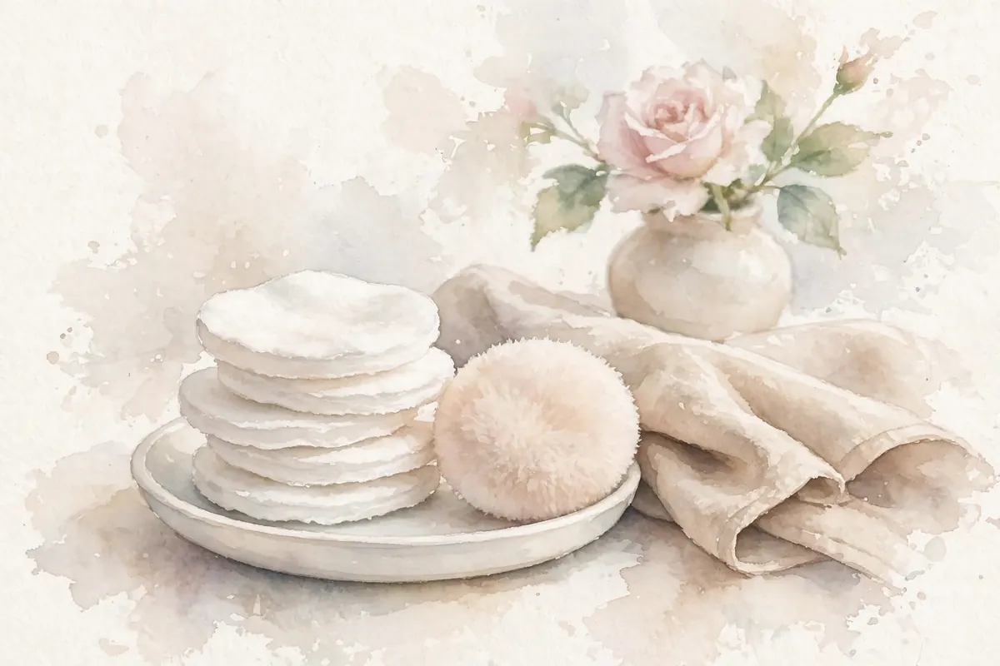

トップ ＞ スキンケア ＞ コットンとパフ、どう使い分ける？ 表示から読む選び方
コットンとパフ、どう使い分ける？ 表示から読む選び方

施術のお客様との会話で、「化粧水は手でつけるのとコットンでつけるのと、どっちがいいんですか」と聞かれることがあります。コットンとパフは、どちらも「塗るための道具」ですが、役割は少しずつ違います。この記事では、特定の商品をおすすめするのではなく、コットンとパフの使い分けと、パッケージ表示の読み方を整理します。
コットンとパフ、役割の違い
コットンは、化粧水や拭き取り用のアイテムと一緒に使うことが多い道具です。薄くて平らな形のものが多く、肌の上にのせたり、やさしくなでるように使ったりします。パフは、ファンデーションやおしろいなど、粉やクリーム状のものをのせるための道具で、厚みがあり、スポンジのような感触のものが多いのが特徴です。
つまり、コットンは「水分を含むものを運ぶ」道具、パフは「粉やクリームをのせる」道具、と分けて考えると整理しやすくなります。もちろん、商品によっては境目があいまいなものもあります。パッケージに「何と一緒に使うものか」が書かれている場合は、まずその表示を手がかりにしてください。
パッケージの表示で見るポイント
コットンを選ぶとき、私が見るのは3つの表示です。ひとつ目は素材です。「綿100%」や「天然コットン」といった表示のほか、化粧水用、拭き取り用、パック用など、用途が書かれているものもあります。ふたつ目は枚数です。1袋に何枚入っているかで、1日あたりの使う枚数と、なくなるまでの期間が見えてきます。
みっつ目はサイズと形です。大きめのものは顔全体に使いやすく、小さめのものは部分使いに向いています。角のある形は、目のまわりや小鼻などの細かい部分に当てやすいものです。パフの場合は、素材のほかに、洗って使えるタイプかどうかが表示されていることがあります。「洗える」「水洗い可」といった表示があれば、手入れの方法もあわせて確認しておきます。
使い方の目安と、取り替えのタイミング
コットンは、基本的には1回使い切りです。化粧水を含ませたら、肌の上をこすらず、やさしく押さえるように使うのが、私の現場での使い方です。力を入れてこすると、肌への負担になると考えているからです。使う枚数は、化粧水の量や肌の広さによりますが、1枚で足りなければもう1枚足す、という考え方で十分です。
パフは、繰り返し使うものと、使い捨てのものがあります。繰り返し使うタイプは、表示の手入れ方法に沿って洗い、よく乾かしてから使います。洗わずに使い続けると、粉や皮脂がたまって、肌触りが変わってきます。パフの表面がへたってきたら、取り替えの目安です。取り替えの頻度は使う回数によりますが、「触った感触が変わった」と感じたら、見直すタイミングだと考えています。
迷ったときの選び方
コットンとパフ、どちらから揃えればいいか迷ったら、まず今使っているアイテムの表示を確認してください。化粧水の裏面に「コットンに含ませて使う」と書かれていれば、コットンが前提の商品です。逆に、手でつけることを前提に書かれているものもあります。道具は、使うアイテムの表示に合わせるのが基本です。
また、コットンやパフは消耗品です。高価なものを長く使うより、手入れと取り替えのしやすさを優先するのが、私の考え方です。肌に直接触れる道具だからこそ、清潔に保てるかどうかを基準に選んでください。
コットンとパフの置き場所も、使いやすさに関わります。コットンは湿気を吸いやすいので、袋の口を閉じて、洗面所の乾いた場所に置くのが基本です。パフは、洗ったあとによく乾かしてから、ケースや袋に入れて保管します。使い終わったパフを濡れたままケースに戻すと、乾きにくくなります。道具の置き場所を決めておくと、毎回のケアの流れが短くなり、取り替えのタイミングも見えやすくなります。
セラフィナ「コットンは水ものを運ぶ道具、パフは粉ものをのせる道具。役割が分かれば、選び方も見えてくるね」

セラフィナ｜美容の道具箱の案内役
「量と表示が分かれば、美容は失敗しない。」——セラフィナと白猫のモコが、買う前のチェックポイントを案内します。綺麗になりたい気持ちに正直に、でも表示は冷静に読むのが、このサイトの約束です。